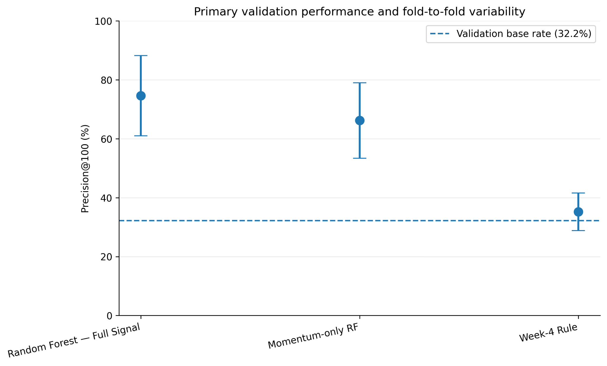

01Machine Learning · Capstone
Content Decline Ranking
Identifying pages at higher risk of future search-impression decline so limited analyst time can be focused where it matters most.
61,795final modeling pages
74.6%mean Precision@100
+39.4 ppvs Week-4 rule
Validation decision
Client-disjoint folds replaced optimistic random-row validation.
- Built a 21-feature Random Forest ranking workflow using pre-outcome signals only.
- Controlled leakage and evaluated on unseen clients across five grouped folds.
- Kept the output human-in-the-loop: the model prioritizes, a person investigates and decides.